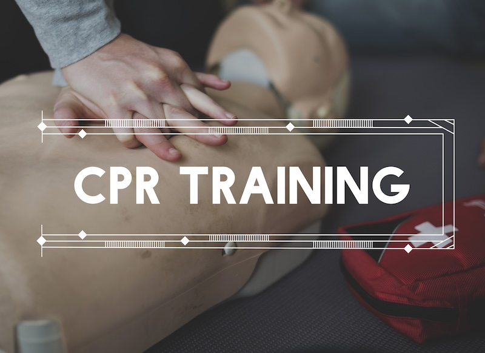

Commonly asked questions
- What will be taught in the community sessions?
- We will focus on hands only Cardiopulmonary Resuscitation (CPR).
- What is cardiac arrest?
- Cardiac arrest is when the heart stops beating in a way that blood is no longer circulated through the body in a way to perfuse the brain and other important organ systems.
- What is hands only CPR?
- This is the efforts needed to increase the chance of survival for a person that has suffered cardiac arrest.
- What tools are needed to do hands only CPR?
- You only need your hands and a good rhythm to give CPR.
- Do I have to breathe for the person in cardiac arrest?
- No, you do not need to breathe for the person in cardiac arrest because CPR gives allows the exchange of air happens when providing hands only CPR.
- How does CPR help a person in cardiac arrest.
- When pushing on a person’s chest in cardiac arrest the heart gets compressed when pushing down on the chest. This squeezes the blood out of the heart to the body by way of arteries full of one-way valves. When letting up off the chest, blood is pulled back into the heart. Every time the chest is compressed in this way delivers oxygenated blood to the brain.
- When should you stop CPR?
- If you can do hands only CPR you should continue until someone arrives to take over or are so exhausted, you can no longer continue efforts.
- When helping a person in cardiac arrest of any age or gender, what if compressions are not done well enough?
- When a person attempts to help save a life there is a Good Samaritan law in place to protect people that are trying to help the ill or injured.
- When will lessons be taught on AED or first aid?
- KCal will focus on the hands only CPR of adults as well as methods for compressing the chest of children and infants. Other components will be addressed in later sessions after the display of quality compressions have been displayed within the community meeting.
- How often will classes be held?
- There are multiple communities in Kansas City Kansas. There will be classes held in community centers biannually so all communities can be trained in life saving efforts.
- How do you do compressions?
- Two hands should be placed on the lower half of the sternum. The person should compress 2 inches down on the chest and then let all pressure off of the chest with the hands to allow the chest to come all the way back up without breaking contact with the chest.